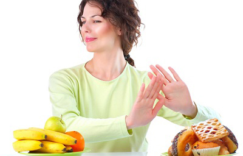

Ăn kiêng giảm cân: Hại nhiều hơn lợi
Ăn kiêng là phương pháp giảm cân truyền thống được nhiều ngươi thực hiện. Tuy nhiên phương pháp này không được đánh giá cao bởi ẩn chứa nhiều tác hại hơn là tác dụng.  Ăn kiêng là phương pháp giảm cân truyền thống được nhiều ngươi thực hiện.Thay vì chế độ ăn đầy đủ dinh dưỡng nhiều eva thường áp dụng chế độ ăn không tinh bột, không chất béo, không chất đạm hoặc nhịn ăn dài ngày với hi vọng tình trạng thừa cân của cơ thể sẽ được cải thiện và thân hình sẽ cân đối, xinh đẹp hơn. Có một số ít bạn gái đã giảm được cân nhờ cách này nhưng song song với đó là sức khỏe của chị em cũng bị ảnh hưởng không kém bởi chế độ ăn thiếu dinh dưỡng, không hợp lí này. Thậm chí nhiều Eva sau khi giảm cân xong, nhưng chỉ cần “ lơ là” trong chế độ ăn uống 1-2 ngày đã khiến cân tăng lại không thể kiểm soát.
Nhiều nghiên cứu khoa học đã chỉ ra rằng việc ăn uống không đủ chất dinh dưỡng để giảm cân có thể gây ra những ảnh hưởng nghiêm trọng về sức khỏe như:
- Rụng tóc do thiếu đạm và protein.
- Da nhăn nheo, xấu xí do lượng mỡ trong cơ thể bị tiêu hao nhanh, tạo chỗ trống dưới da.
- Vòng 1 “xẹp lép” bởi các mô mỡ bị suy giảm.
- Suy giảm hệ miễn dịch do thiếu dinh dưỡng, khả năng phục hồi bệnh kém.
- Tăng nguy cơ mắc các bệnh lây nhiễm như lao, phổi bởi hệ miễn dịch kém không kháng cự được các vi khuẩn gây bệnh.
- Khó thụ thai, vô sinh do cơ thể không sản sinh được hormone estrogen, giảm ham muốn tình dục, ngăn cản quá trình gặp gỡ giữa trứng và tinh trùng.
- Đột tử do cơ thể không đủ sức làm việc gây mất cân bằng, sức khỏe của tim bị đe dọa có thể dẫn đến cái chết đột ngột.
Với những ảnh hưởng tiêu cực của việc giảm cân bằng chế độ ăn kiêng khắc nghiệt mà các nghiên cứu khoa học đã chỉ ra, hi vọng rằng những chị em có ý định áp dụng phương pháp này sẽ thực sự thận trọng để đảm bảo được sự an toàn về sức khỏe.